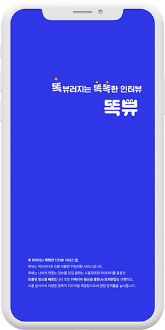
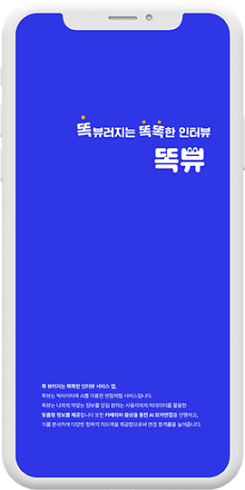

연필과 지우개
단편영화 감독,각본,편집 작업기간 2019.07-10
‘왜 여자는 여자다워야 할까?’라는 의문점에서 시작하게 된 이야기로
같은 여자인 엄마나 친구와 같은 주위의 인물들에게 여성스러움을 강요당하고
자라 온 주인공 ‘준희’가 성인이 되고 성에 대한 고정관념에 대해 의문점을 갖게
되는 이야기로, 아직도 사회에서 흔히 볼 수 있는 성차별적인 시각을 주인공의 시점으로
보여주는 내용을 소재로 한 영화다. 실제 이야기를 바탕으로 여자라면 누구나 한 번쯤
들어봤을 대사들로 이 영화를 보는 여자들에겐 공감과 불편함을 느끼도록, 남자들에겐
현시대에 여자로 사는 것이 어떤 것인지 알게 해줄 수 있는 영화가 되도록 제작했다.
영화의 마지막에서 주인공 ‘준희’가 원피스를 입고갈지,
입고가지 않을 지에 대한 것은 알려주지 않은 채 끝이 난다. 어느 한 쪽이 맞다고
정하고 싶지 않았다. 이 영화는 누군가를 가르치려고 만든 것이 아닌,
주제를 던지고 보는이들이 한 번 생각해보기를 바라는 마음으로 만들었다.
우리는 모두 준희가 될 수도 있고, 미정이가 될 수도 있으며 준희의 엄마는 우리들의 엄마가 될 수 있다.
과일을 좋아하지 않지만 과일을 깎을 줄 아는 어린 여고생의 모습이, 화장을 하기 싫다고
했지만 친구 ‘미정’이 자리를 비웠을 때 입술에 립스틱을 바르는 ‘준희’의 모습이
영화를 보는 이들에게 자신이 주변 사람들에게 어떤 영향을 주는 말과 행동을 하는지
한번 쯤 생각해보길 바란다.

 

취준생들의 똑똑한 면접을 위한 가상 면접 서비스
똑뷰
면접준비가 어렵다면? 당신만을 위한 AI 면접 도우미
똑뷰가 보다 완벽하게 면접 준비를 도와줍니다.
빅데이터를 활용한 실제 사용자들의 생생한 후기를 담은
정확도 높은 정보로 면접 질문을 제공하고,
사용자의 면접 시뮬레이션을 녹화하여 실시간 피드백을 제공합니다.
Copyright©gomme
Seoul, Korea
@dljieun